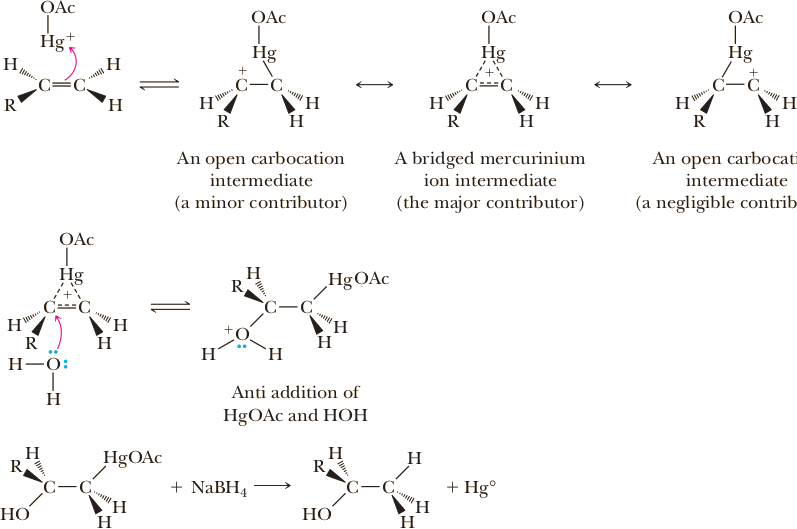

Oxymercuration-Reduction
The hydration of an alkene can be accomplished by treating it with mercury(II) acetate (mercuric acetate) in water followed by reduction of the resulting organomercury compound with sodium borohydride, NaBH4. In the following structural formulas for mercury(II) acetate, the acetate group is written in full in the first formula and abbreviated as AcO in the other formulas.
(Mercuric acetate)
The result of oxymercuration followed by sodium borohydride reduction is Markovnikov addition of H−OH to an alkene.

+ Hg(OAc)2 + H2O ⟶
Reduction of the organomercury compound by sodium borohydride, NaBH4, replaces HgOAc by H.
⟶NaBH4
+
(Racemic mixture)
Although this reaction involves two steps, they can be run sequentially in the same flask. This procedure is usually the prefered method for the hydration of an alkene becase the yields are higher than the acidic-caralyzed addition, and rearrangements do not occur.
Mechanism
Step 1. Break a new bond to give stable molecules or ions. Dissociation of mercury(II) acetate gives AcOHg 1 (an electrophile) and acetate anion.
AcO−Hg−OAc ⟶ AcO−Hg+ (an electrophile) + AcO−
Step 2. Attack of the alkene π bond onto AcO−Hg+ (an electrophile) forms a bridged mercurinium ion intermediate. This intermediate closely resembles a bridged bromonium ion intermediate. However, in the bridged mercurinium ion intermediate, the two π electrons of the carbon-carbon double bond form a ring containing three atoms bonded by two electrons. The open cation structure with the positive charge on the 2° carbon is a minor contributing structure to the resonance hybrid. The open cation contributor with the positive charge on the 1° carbon is a negligible contributor. The fact that oxymercuration occurs without rearrangement indicates that the intermediate formed in Step 2 is not a true carbocation but rather a resonance hybrid largely with the character of a bridged mercurinium ion intermediate.
Step 3. Anti attack of water (a nucleophile) on the bridged mercurinium ion intermediate (an electrophile) occurs at the more substituted carbon to open the three-membered ring. In addition, computer modeling indicates that the carbon-mercury bond to the more substituted carbon of the bridged mercurinium ion intermediate is longer than the one to the less substituted carbon, which means that the ring-opening transition state is reached more easily by attack at the more substituted carbon.
Step 4: Reduction of the C−HgOAc bond to a C−H bond gives the final product and metallic mercury. The mechanism of this step is beyond the scope of this chapter and will not be discussed in detail, which is why we have not drawn arrows to indicate movement of electrons. The mechanism is thought to involve radicals (unpaired electrons). The key from our point of view is that the stereochemistry of any chiral carbon bearing the Hg atom is scrambled in this reduction step. The net result is that even though the OH group and the Hg atom add with anti stereo-chemistry in the oxymercuration step, following reduction of Hg to H, the products reflect a mixture of syn and anti addition of the H atom and OH group.
